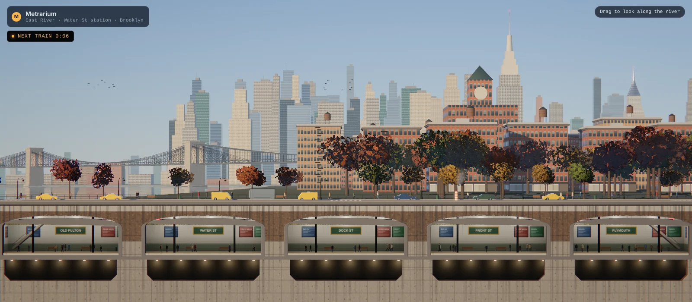
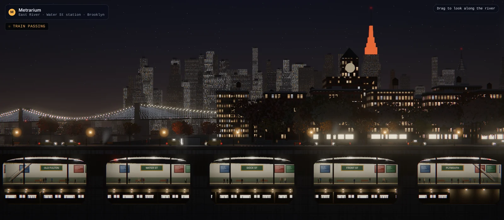
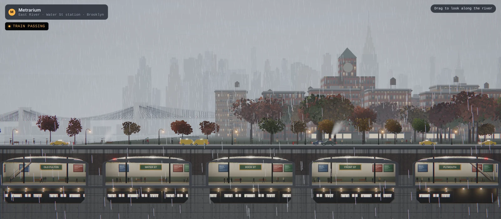
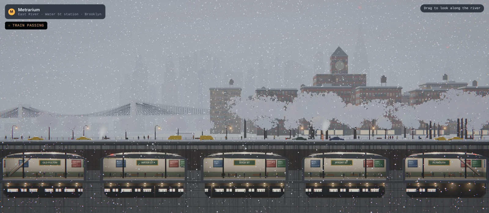
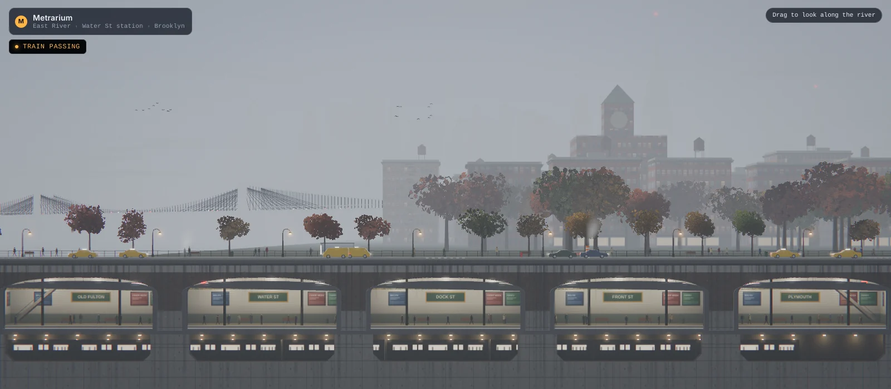
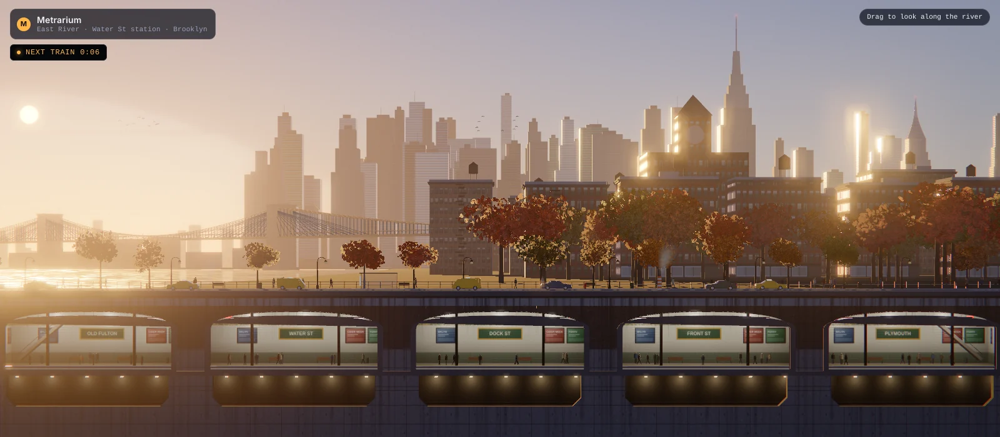

Metrarium
A metro terrarium: the Manhattan skyline from the Brooklyn waterfront, sealed in a live Three.js scene with a 24-hour sky, six kinds of weather and a subway running underneath.
Context
The view from the Brooklyn waterfront at golden hour: the Manhattan skyline across the East River, the Brooklyn Bridge, DUMBO lofts along the promenade, and a subway station cut away underneath the street. Metrarium rebuilds it as a live 3D diorama in the browser, one you can run through a whole day and any weather.
Late afternoon into night, with the train running underneath.
Approach
Everything is modeled in meters and shot with a telephoto, shifted-lens camera 300 m back. That one choice is why it reads like a photograph instead of a model: the skyline stacks the way it does from a long lens, the street stays level, and haze builds with distance the way it does over real water.
Light
The scene renders in linear light, the way a camera sensor sees it, in half-float buffers with real highlight energy. Exposure is metered and adapts over about a second, like an eye stepping outside, and an AgX tone curve rolls the highlights off before a little chromatic aberration, vignette and grain finish the frame. Bloom only comes from things that are actually bright.
Sky
The sky is a physical model of the atmosphere: Rayleigh, Mie and ozone scattering over a curved earth, plus the light that scatters more than once, worked out on the CPU into small lookup textures. The same model drives the sun’s color, the ambient light and the reflections, so noon comes out blue, golden hour glares, and dusk goes purple over orange. A 24-hour scrubber, its track painted with the sky’s own colors, runs the day at real late-October New York times.

Morning.

Night. The street, platforms and tunnel are lit by their own fixtures. The Empire State Building is orange for Halloween week.
Air
Haze thickens toward the ground and takes the color of the sky behind it, so the skyline dissolves into the horizon instead of fading to grey, and glows on the side facing the sun.
Weather
Clear, clouds, rain, snow, fog and thunderstorm, and each one blends into the next instead of switching. Rain rings the river and puts umbrellas over the pedestrians. Snow builds up over time on roofs, cars and curbs, then melts off again when it stops.

Rain.

Snow, after it has settled.

Fog.
The city
Facades are procedural: curtain wall, limestone, prewar masonry and brick lofts, with window reveals that have real depth, blinds and curtains, and their own lights at night. The landmarks are there by name: the Empire State, the Chrysler crown, One World Trade Center, the Brooklyn Bridge with its cable web, and a DUMBO clock tower.
Street life
Taxis, sedans, an NV200 cab and an MTA bus. Bishop’s-crook lamps, benches, hydrants, crosswalks, a bus shelter, a Con Ed steam stack, and autumn trees. On the river a NYC Ferry, a water taxi and a tug with its barge; overhead a jet with its strobes, a helicopter and flocks of birds.
Underground
Below the street, five tiled platforms are lit only by their own fluorescent fixtures, computed in the materials themselves instead of as dozens of point lights, the same way the street lamps and tunnel lamps are. A stainless-steel train runs through every ten to twenty seconds over a track pit with ballast and rails, and the cut shows the ground in section: asphalt, concrete, then earth.

Golden hour, with a train passing.
Performance
A scene this dense started at about 7,000 draw calls a frame. Everything that doesn’t move is now baked into place and merged by material when the page loads, about 1,570 meshes into 162, and the river’s reflection skips anything that could never appear in it. A frame is roughly 600 draw calls. If a device still can’t hold about 45 fps, a governor steps quality down once, resolution first, then reflection and shadow detail.
Try it
This one is live. Scrub the day, change the weather, or drag to look along the river. It is a heavy scene, with a full HDR pipeline, a reflected river, soft shadows and depth in every window, so older phones run it slowly.
Not a recording. Or open it full screen.
Summary
Metrarium is a postcard you can leave running: one view of New York, true to scale and light, that changes with the hour and the weather and keeps a train moving underneath.